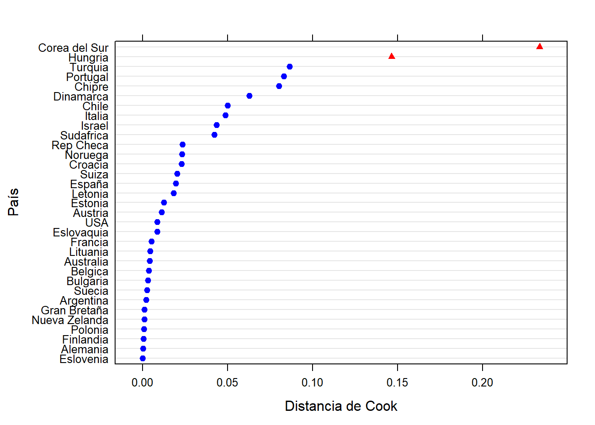

4.1 Group | ICC
COUNTRY | 0.217 [,1] Alemania 0.0001215431586 Argentina 0.0019407089721 Australia 0.0041032295758 Austria 0.0109933476192 Belgica 0.0035608830951 Bulgaria 0.0031182339540 Chile 0.0499749892852 Chipre 0.0800501655842 Corea del Sur 0.2334380021358 Croacia 0.0229099522746 Dinamarca 0.0626356373650 Eslovaquia 0.0083555738153 Eslovenia 0.0000000342891 España 0.0195041116335 Estonia 0.0124429552725 Finlandia 0.0004313924004 Francia 0.0050098710034 Gran Bretaña 0.0009822586299 Hungria 0.1463359566860 Israel 0.0433225789257 Italia 0.0487164809265 Letonia 0.0181004326647 Lituania 0.0042719648429 Noruega 0.0231422399653 Nueva Zelanda 0.0008053066020 Polonia 0.0005858302325 Portugal 0.0829224841150 Rep Checa 0.0234008771129 Sudafrica 0.0421883687097 Suecia 0.0025736203544 Suiza 0.0201416628447 Turquia 0.0864035628384 USA 0.0085205270618 
sjPlot::tab_model(list(model_0, model_2, model_3, model_4, model_5), show.ci = F, p.style = "stars", show.se = T, show.p = T, auto.label = F, show.r2 = F, show.loglik = T, show.icc = T, show.aic = T, show.re.var = T, show.ngroups = T, show.obs = T, show.dev = T, digits = 2, p.threshold = c(0.05, 0.01, 0.001))| PSCi | PSCi | PSCi | PSCi | PSCi | ||||||
|---|---|---|---|---|---|---|---|---|---|---|
| Predictors | Estimates | std. Error | Estimates | std. Error | Estimates | std. Error | Estimates | std. Error | Estimates | std. Error |
| (Intercept) | 3.88 *** | 0.17 | 3.50 *** | 0.18 | 3.71 *** | 0.19 | 3.73 *** | 0.28 | 3.71 *** | 0.29 |
| CLASS2.Pequeños empleadores | 0.05 | 0.09 | 0.01 | 0.09 | 0.02 | 0.09 | 0.02 | 0.09 | ||
| CLASS3.Pequeña burguesia | 0.28 ** | 0.09 | 0.20 * | 0.09 | 0.23 ** | 0.09 | 0.21 * | 0.09 | ||
| CLASS4.Expertos directivos | -0.04 | 0.09 | -0.15 | 0.09 | -0.12 | 0.09 | -0.12 | 0.09 | ||
| CLASS5.Expertos sin autoridad | 0.19 * | 0.09 | 0.01 | 0.09 | 0.04 | 0.09 | 0.03 | 0.09 | ||
| CLASS6.Supervisores calificados | 0.21 * | 0.09 | 0.12 | 0.09 | 0.13 | 0.09 | 0.13 | 0.09 | ||
| CLASS7.Supervisores no calificados | 0.57 *** | 0.09 | 0.45 *** | 0.09 | 0.47 *** | 0.09 | 0.47 *** | 0.09 | ||
| CLASS8.Trabajadores calificados | 0.40 *** | 0.09 | 0.26 ** | 0.09 | 0.27 ** | 0.08 | 0.26 ** | 0.08 | ||
| CLASS9.Trabajadores no calificados | 0.54 *** | 0.08 | 0.38 *** | 0.08 | 0.41 *** | 0.08 | 0.40 *** | 0.08 | ||
| UNIONSi | 0.04 | 0.02 | 0.08 *** | 0.02 | 0.09 *** | 0.02 | 0.09 *** | 0.02 | ||
| AGE | -0.01 *** | 0.00 | -0.01 *** | 0.00 | -0.01 *** | 0.00 | ||||
| SEXMujer | 0.17 *** | 0.02 | 0.19 *** | 0.02 | 0.18 *** | 0.02 | ||||
| relevel(IDEOLOGY, ref = “Derecha”)Centro | -0.06 | 0.03 | -0.03 | 0.03 | -0.03 | 0.03 | ||||
| relevel(IDEOLOGY, ref = “Derecha”)Izquierda | 0.21 *** | 0.02 | 0.20 *** | 0.02 | 0.20 *** | 0.02 | ||||
| relevel(IDEOLOGY, ref = “Derecha”)Sin identificación | 0.17 *** | 0.03 | 0.20 *** | 0.03 | 0.22 *** | 0.03 | ||||
| C_RATIO | 0.17 *** | 0.01 | 0.21 *** | 0.01 | ||||||
| CorpAll | -1.35 *** | 0.12 | -1.49 *** | 0.13 | ||||||
| WAVE2009 | -0.23 *** | 0.03 | -0.26 *** | 0.05 | ||||||
| WAVE2019 | -0.30 *** | 0.04 | -0.45 *** | 0.07 | ||||||
| C_GDP | 0.94 *** | 0.15 | ||||||||
| C_UD | 0.02 *** | 0.00 | ||||||||
| Random Effects | ||||||||||
| σ2 | 3.29 | 3.26 | 3.24 | 3.19 | 3.19 | |||||
| τ00 | 0.91 COUNTRY | 0.89 COUNTRY | 0.90 COUNTRY | 2.24 COUNTRY | 2.45 COUNTRY | |||||
| ICC | 0.22 | 0.21 | 0.22 | 0.41 | 0.43 | |||||
| N | 33 COUNTRY | 33 COUNTRY | 33 COUNTRY | 33 COUNTRY | 33 COUNTRY | |||||
| Observations | 39853 | 39853 | 39853 | 39853 | 39853 | |||||
| Deviance | 164353.994 | 163959.435 | 163636.696 | 163140.975 | 163083.551 | |||||
| AIC | 164361.739 | 164028.509 | 163751.517 | 163283.079 | 163240.878 | |||||
| log-Likelihood | -82177.869 | -82002.254 | -81858.759 | -81620.540 | -81597.439 | |||||
|
||||||||||